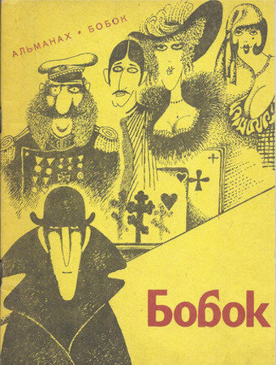

"Бобок", написанный Фёдором Михайловичем Достоевским в 1873 году, представляет собой небольшой, но глубоко философский рассказ, затрагивающий темы смерти, страха, жадности и человеческой природы.
Рассказ повествует о двух персонажах: старике Афанасии Ивановиче, страдающем от сильной жажды, и молодом человеке по имени Иван, которого он нанимает, чтобы тот принес ему воды из колодца. Афанасий Иванович живет в одиночестве, но в его доме появляется "странный гость" - мертвый "Бобок", которого Иван обнаруживает в доме. Иван, изначально испуганный, решает не сообщать об этом странном происшествии старику, а использовать ситуацию в свою пользу. Он начинает шантажировать Афанасия Ивановича, требуя за молчание огромную сумму денег. Старик, испуганный и жадный, соглашается на условия Ивана. Он боится не столько "Бобка", сколько того, что люди узнают о его смерти и о том, что он скрывал её. Он решает оставить Ивана у себя в доме, позволяя ему жить в роскоши, лишь бы тот молчал. В итоге Афанасий Иванович, опасаясь, что Иван может его убить, пытается избавиться от него, но умирает сам. Иван остается один в пустом доме, окруженный богатством, но не знающий, что делать дальше.
Жадный и трусливый старик: Афанасий Иванович — главный герой рассказа, богатый старик, живущий в одиночестве. Он одержим страхом смерти и жаждой богатства, что делает его неспособным к любому проявлению сочувствия или милосердия.
Жертва своих страхов: Афанасий Иванович постоянно боится, что его смерть станет известна и его богатство отберут. Он готов на все, чтобы сохранить свою анонимность, даже на то, чтобы скрывать смерть "Бобка" и платить шантажисту.
Неспособность к любови: Афанасий Иванович изолирован от людей, он не способен на любовь и сочувствие. Его отношения с Иваном - это отношения шантажиста и жертвы, где обе стороны движимы только эгоизмом и жадностью.
Символ беспомощности: Афанасий Иванович является символом человеческой слабости и беспомощности перед смертью. Он не может с ней смириться, он пытается ее отрицать и скрыть, но в итоге она оказывается сильнее его.
Беспринципный и жадный молодой человек: Иван - второй главный герой рассказа. Он беспринципен, жаден и не колеблясь использует ситуацию с "Бобком" в свою пользу.
Шантажист и манипулятор: Иван - циничный и хитрый шантажист, который использует страх Афанасия Ивановича, чтобы получить богатство.
Жертва своих амбиций: Иван не может управлять своим желанием быть богатым, он не учитывает последствия своих действий. Он одержим жадностью и не способен видеть ничего, кроме своего собственного блага.
Символ темной стороны человеческой природы: Иван является символом темных сторон человеческой природы, жадности, беспринципности и бессердечия.
Мертвый человек как символ: "Бобок" - мертвый человек, оказавшийся в доме Афанасия Ивановича. Он является не просто фигурой в рассказе, а символом смерти, страха и неизвестности.
Причина страха: "Бобок" - это источник страха для Афанасия Ивановича. Он боится не столько самого "Бобка", сколько того, что его смерть раскроет его тайну и лишит его богатства.
Стимул для действия: "Бобок" - это причина, по которой Иван начинает шантажировать Афанасия Ивановича. Он использует "Бобка" как орудие для достижения своих эгоистических целей.
